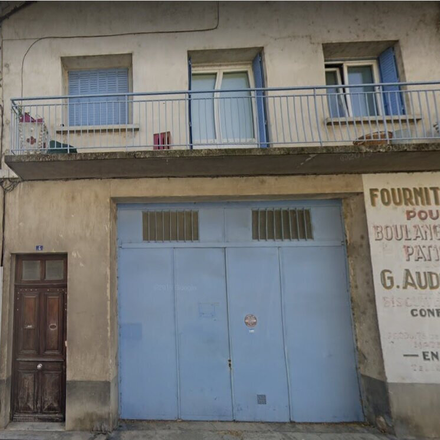

Portrait d’archive
Estelle Boleslawski
Estelle BOLESLAWSKI
Estelle BOLESLAWSKI est née le 01/05/1942 à Montpellier en France. Elle avait 1 ans.
Rassemblée à Lyon, elle est déportée à Auschwitz le 10/02/1944 par le convoi n°68. Elle est morte en déportation.
Dernière adresse connue : 4, avenue Villeneuve 26200 (Montélimar)
Nom : BOLESLAWSKI
Prénom(s) : Estelle
Date naissance : 01/05/1942
Âge (ans) : 1
Lieu naissance : Montpellier
Pays ou département : Hérault
Lieu rassemblement : Lyon
Dernière adresse : 4, av. Villeneuve
Ville : Montélimar
Code postal : 26200
N° Convoi : 68
Date déportation : 10/02/1944
Informations diverses : Déportée avec son père Wigdor Abraham (22/12/1907 ou 23/08/1907, Lodz) survivant et sa mère Hella née Katz (05/12/1908, Kutno).
Lieu de déportation : AuschwitzBolesla
Lieu de départ : Drancy
Nombre total de déporté·e·s du convoi : 1500
Gazé·e·s à l'arrivée : 1229 (81,9 %)
Survivant·e·s en 1945 : 59 (3,9 %)